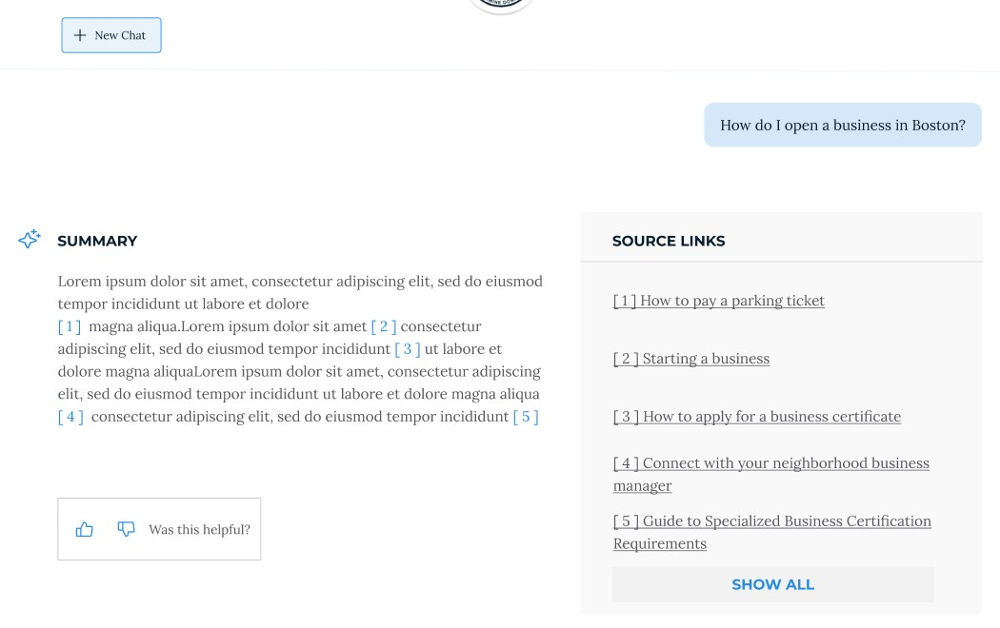
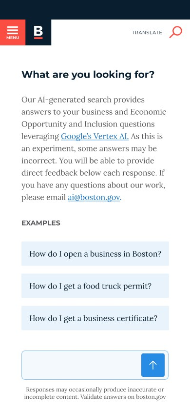
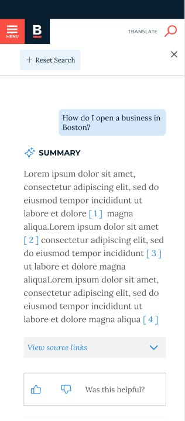
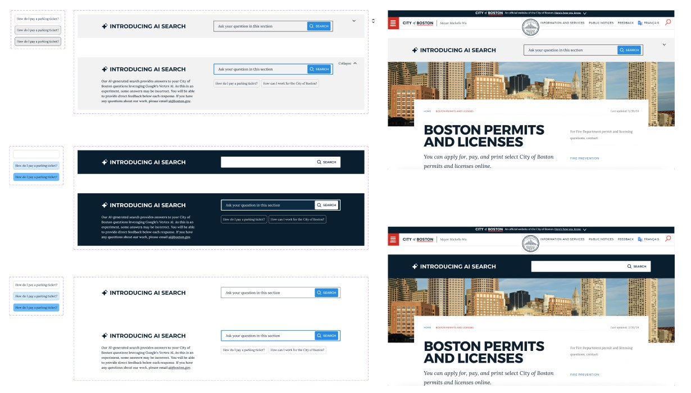
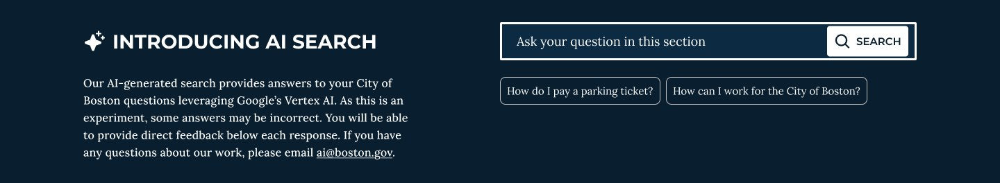
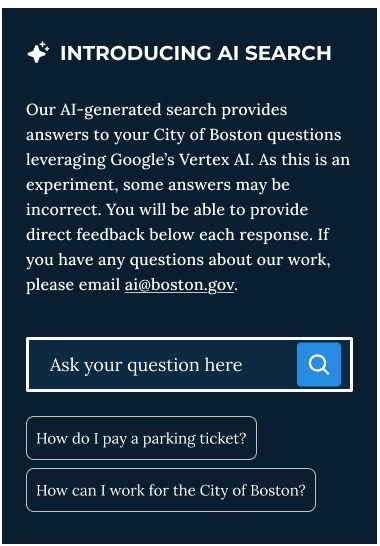
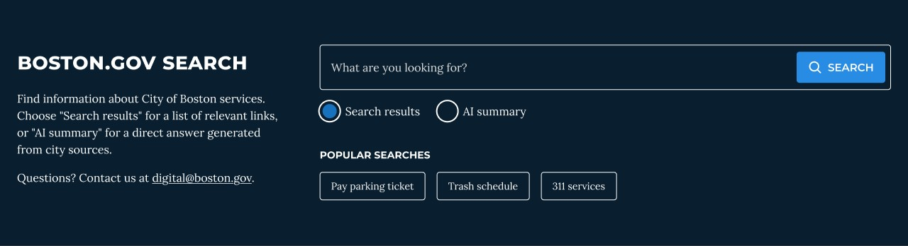
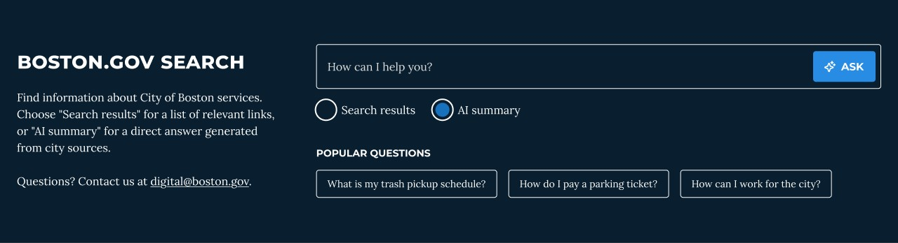
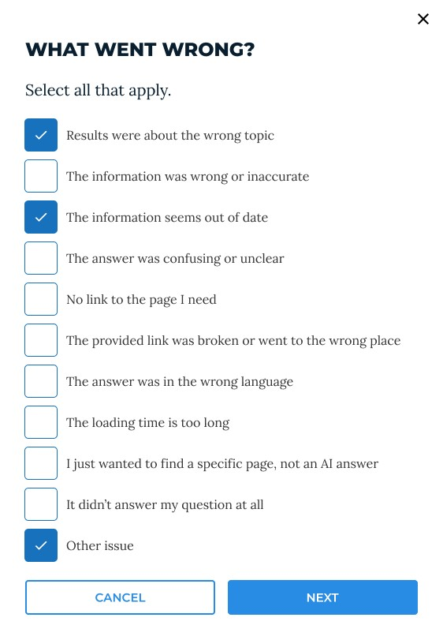
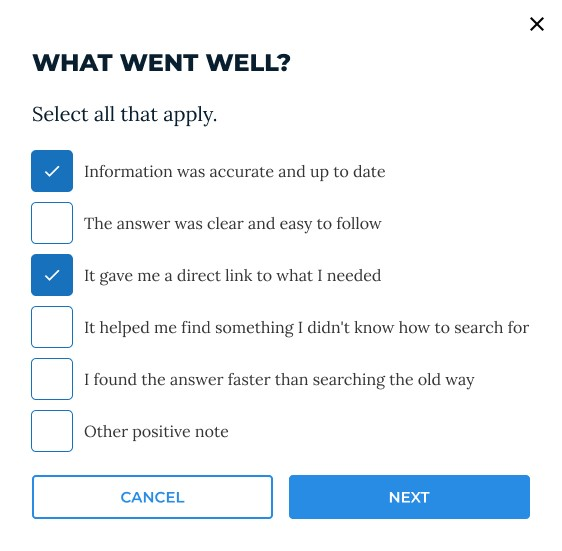

A small detail with a big impact
An AI answer is only as trustworthy as the source behind it.
Instead of asking residents to read a summary and then hunt through search results, I connected every answer to official Boston.gov pages: numbered references in the summary, matched to source links beside it.

Boston.gov serves residents with different needs, backgrounds, and levels of familiarity with City services. The existing keyword search, powered by Swiftype, often returned broad or unfocused results, so residents needed to know the right terms or dig through several pages.
As part of the City's exploration of generative AI, I led the UX/UI design of AI-powered search on Boston.gov, from a focused pilot to a site-wide experience used by residents across the city.
The problem
Introducing AI required more than generating answers.
On a public-sector website, residents use information to access essential services and make important decisions. Answers had to be useful, understandable, and grounded in reliable City information.
Finding relevant information
Keyword search required residents to know specific terms to find the right resources.
Maintaining trust
AI responses had to reflect official Boston.gov content, not introduce unsupported or misleading information.
Connecting answers to action
A summary wasn't enough. Residents also needed an easy way to reach the official pages and services behind it.
Being honest about AI
Residents needed to know when they were reading an AI-generated answer, and that it could occasionally be wrong.
The design challenge
How might we help residents find City information by asking questions naturally, while keeping AI answers trustworthy, understandable, and connected to official resources?
Research
Mapping a resident's journey before designing.
Before designing any screens, I mapped how a resident might use AI search to solve a real task. The scenario: Dan, a business owner trying to get his business certified. The journey map follows his actions, thoughts, and feelings across five phases, and turns the low points into design opportunities.
-
1. Learning
Dan is starting a business and knows he needs to register it. He decides to search online.
“I’m wondering what certificates I need to start a business.”
-
2. Searching
He visits Boston.gov, starts looking, and sees a lot of information. Then he finds AI search.
“I’m overwhelmed by the amount of information.”
-
3. Evaluating results
He reads the conversational answer, scrolls to the links, and compares them.
“The paragraph tells me the steps I need in a simple, easy-to-follow way.”
-
4. Decision making
He clicks the most relevant result and reads how to get certified.
“This link is giving me all I need.”
-
5. Taking action
He gathers the details and begins the certification process.
“I have a step-by-step guide to help me get to my goal.”
Opportunities that shaped the design
These opportunities became the backbone of the design: plain language, clear and relevant source links, accessibility, mobile support, and a built-in way to collect feedback.
The pilot
Starting where the content was ready.
Rather than launching AI across the whole site, the team piloted it on the Office of Economic Opportunity and Inclusion (OEOI) section. Three years earlier, I had redesigned how residents and businesses find information in that section, organizing it around what people look for rather than the City's internal structure.
That work made OEOI the natural place to start: its pages were well structured and current, giving the AI a reliable foundation. AI quality depends on content quality.
Mapping the pilot flow
I mapped the full flow before designing screens: how residents reach AI search from the office's pages, ask a question, and what they can do with the results, including opening a source, giving feedback, or starting a new search.
Designed for mobile from the start
On phones, the source links collapse into a "View source links" control under the summary, so the answer stays readable without losing the path to official pages.

Start

Answer with sources
Designing for trust
Clear about what's AI, and where it comes from.
I explored multiple concepts before committing to a direction, then worked closely with engineering and the Content Director to balance the experience with technical and content requirements.
Disclose, plainly
Every entry point explains that answers are AI-generated, that some may be incorrect, and how to reach the team.
Show the sources
Numbered references tie each part of the answer to the official page it came from.
Invite feedback
A "Was this helpful?" control under every answer feeds directly into improving the experience.
Honest when it doesn't know
Dedicated states tell residents plainly when there's no information available, or when something went wrong, instead of showing a weak or speculative answer.
Accessibility was built in from the start: layout and hierarchy that keep the answer, sources, and actions easy to scan, and full keyboard access to search, read responses, and reach source links.
Evaluating the pilot
Did AI search change how residents felt about search?
After the pilot, we compared feedback sentiment between traditional search and AI Search, using Boston.gov's existing feedback mechanism.
- 11% → 34.9%
positive feedback, traditional search vs. AI Search.
- 85% → 65.1%
negative feedback, traditional search vs. AI Search.
The results showed a meaningful shift, but negative sentiment remained an opportunity. The feedback also reinforced a key point: generating an answer doesn't mean a resident has found what they need. We kept improving.
These figures measure feedback sentiment, not search success or task completion.
Going site-wide
From one office to all of Boston.gov.
After the pilot and further iterations, AI Search expanded across Boston.gov, replacing Swiftype. A much larger and more varied range of content meant a new question: how should AI search appear on every page without getting in the way?
Exploring the entry point
I explored several treatments for a search banner that sits above each page's content: light, dark, and white backgrounds, collapsed and expanded states, and example questions as chips.

The chosen direction
A dark banner stands out from page content without competing with it. It keeps the disclosure, the question box, and example questions together, and stacks cleanly on phones.


Live on Boston.gov

The team's continued work
While I was on leave, another designer added a control that lets residents switch between AI Search and traditional search. It reinforced a principle that runs through this project: introducing new technology shouldn't remove familiar ways of accomplishing a task.
2026 improvements
Clearer choices, closer sources, better feedback.
This year I designed a new round of improvements based on what residents told us through feedback. Three priorities shaped it: give residents a clear choice, bring sources into the answer itself, and learn exactly why an answer did or didn't work.
1. A clear choice between results and answers
Some residents want a list of pages; others want a direct answer. The search banner now offers both, with a short explanation of each. The button changes from Search to Ask, and the suggestions change from popular searches to popular questions, so the interface always matches what the resident chose.


On the results page, tabs let residents switch between the two at any time without retyping their question.
2. Sources right where they're needed
Building on the source links from the pilot, each part of the answer now carries a small source chip. Hovering or focusing on it shows the exact Boston.gov pages behind that statement, so residents can verify a fact without leaving the answer. Related questions and a clear AI disclaimer close every response.
3. Feedback that tells us what to fix
I originally designed the thumbs up and down feedback for AI Search. This year I expanded it: after a rating, residents can say exactly what went wrong or what went well. The options map to things the team can act on, such as outdated content, broken links, the wrong language, or slow loading, turning feedback into a content and quality roadmap.


The result
A more flexible, connected search experience.
- +23.9 pts
increase in positive feedback compared with traditional search.
- Site-wide
From an OEOI pilot to AI search across Boston.gov.
- Grounded answers
Responses tied to official City pages, with clear AI disclosure.
- Actionable feedback
Specific reasons behind every rating, mapped to fixes the team can make.
What I learned
Trust has to be designed in, and kept up.
AI quality depends on content quality.
The content and information architecture work I had done on OEOI years earlier is what made it the right place to start.
An answer isn't the same as a successful outcome.
A generated summary doesn't mean a resident found what they need. Reaching the official resource and taking the next step matters just as much.
Be honest about the technology.
Residents need to know what's AI-generated, where it comes from, and what to do when it can't help.
AI products need continuous iteration.
Launch is the beginning. Feedback, content quality, and testing keep making the experience better.